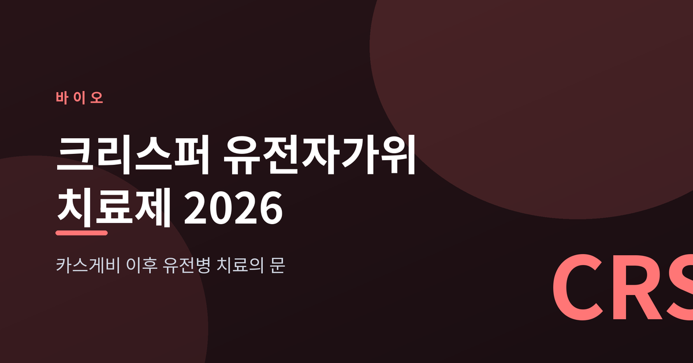
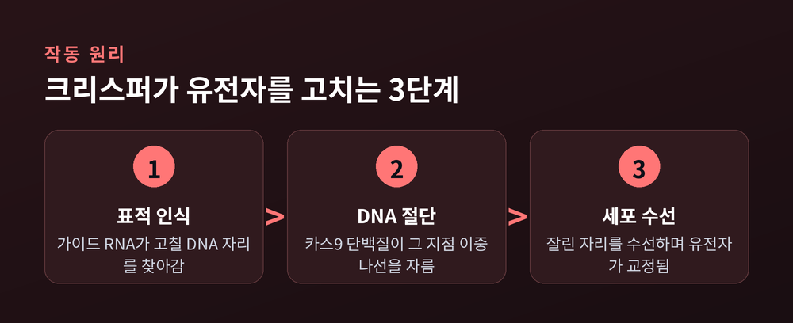
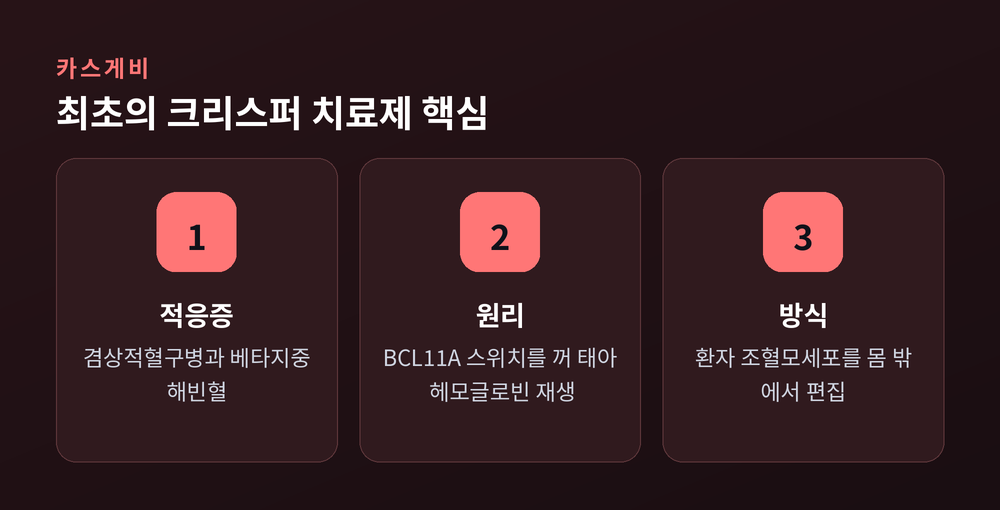
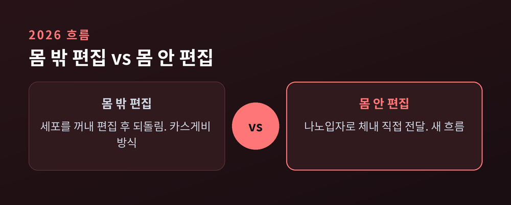

카스게비 이후 열린 유전병 치료의 문

유전자가위 치료제가 실험실을 나와 병상에 도착했습니다. 2023년 최초의 크리스퍼 치료제 카스게비가 승인된 뒤, 유전병 치료는 새로운 국면에 들어섰습니다. 오늘은 크리스퍼의 원리부터 2026년의 최신 흐름과 남은 한계까지 차분히 정리해 보겠습니다.
크리스퍼-카스9의 원리는 의외로 단순합니다. 먼저 가이드 RNA가 고쳐야 할 DNA 자리를 찾아갑니다. 위치를 잡으면 카스9 단백질이 그 지점의 DNA 이중나선을 자릅니다. 절단된 자리는 세포가 스스로 수선합니다.
수선 과정에서 문제의 유전자가 조용해지거나, 원하는 서열로 바뀝니다. 유전자를 '가위로 오려 고친다'는 비유가 여기서 나옵니다. 정확한 위치를 찾는 가이드 RNA가 이 기술의 핵심인 셈입니다.

카스게비(엑사-셀)는 세계 최초로 승인된 크리스퍼 유전자편집 치료제입니다. 미국 FDA는 2023년 12월 겸상적혈구병에, 2024년 1월 수혈의존성 베타지중해빈혈에 이를 승인했습니다.
치료 방식은 몸 밖에서 이뤄집니다. 환자 자신의 조혈모세포를 꺼내 BCL11A 유전자의 스위치를 끕니다. 이 스위치가 꺼지면 태아 시절 만들던 헤모글로빈이 다시 생산됩니다. 태아형 헤모글로빈은 낫 모양으로 변형되지 않아 병을 대신 막아 줍니다. 다만 편집한 세포를 되돌리기 전 부술판 같은 고강도 항암 전처치가 필요합니다. 몸에 부담이 적지 않은 과정입니다.

카스게비가 몸 밖 편집이라면, 최근 무게중심은 체내(in vivo) 편집으로 옮겨가고 있습니다. 인텔리아의 트랜스티레틴 아밀로이드증 치료 후보는 지질나노입자로 크리스퍼를 간에 직접 실어 보냅니다. 12개월 시점에 원인 단백질을 약 87% 줄였다고 보고됐습니다.
기술 자체도 정교해지고 있습니다. DNA를 자르지 않고 한 글자만 바꾸는 염기교정, 원하는 서열로 검색하듯 갈아 끼우는 프라임 에디팅이 초기 임상에 들어섰습니다. 자르지 않으니 안전성 면에서 기대를 모읍니다. 2026년 현재 세계적으로 활성 임상만 150건이 넘습니다.

낙관만 할 수는 없습니다. 카스게비의 가격은 1회 약 220만 달러에 이릅니다. 한 번의 치료라 해도 접근성은 여전히 무거운 숙제입니다.
기술적 과제도 남아 있습니다. 가위가 엉뚱한 자리를 자르는 오프타깃 위험, 편집 도구를 표적 세포까지 정확히 실어 보내는 전달의 문제가 그것입니다. 그리고 크리스퍼가 모든 유전병을 고치는 만능열쇠는 아닙니다. 실제 치료 여부는 반드시 담당 전문의와 상담해 판단하시길 권합니다.
정리하면 이렇습니다. 유전자가위는 이제 이론이 아니라 실제 치료제로 존재합니다. 다만 문이 열렸다는 것과 누구나 그 문을 지날 수 있다는 것은 다른 이야기입니다.
— "고칠 수 있다"와 "닿을 수 있다"는 아직 같은 말이 아닙니다.
기술이 다음으로 넘어야 할 문턱은, 실험실이 아니라 그 거리에 있는지도 모릅니다.